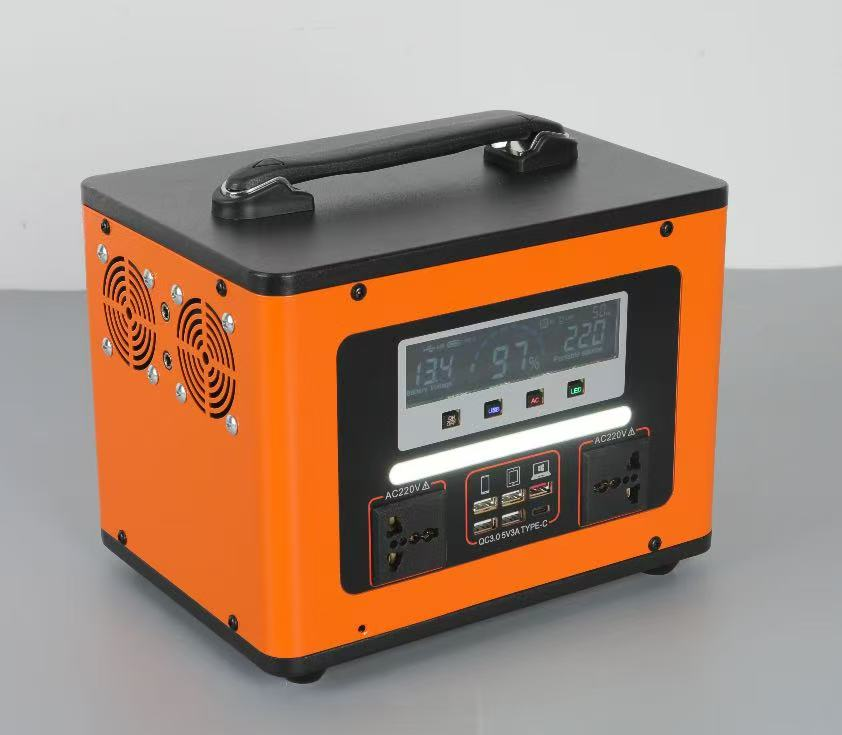
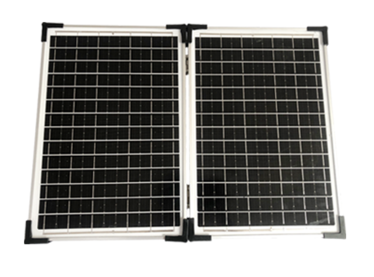

A portable power station is most useful when the customer starts from the real load they need to keep running, not from a headline watt-hour number. The same product can support a family during a grid outage, keep a small shop operating, power tools at a remote job site, charge communications equipment, or provide light and power at a camp or event.
Quick answer
For phones, lights, a router and a fan, a compact 300W class unit is often enough. For a home, shop or small office running a television, laptop, payment terminal and a small refrigerator, choose the 500W to 1000W class. For pumps, power tools, medical equipment or several rooms, calculate starting watts and choose a larger station or fixed solar storage system.
Watch the Portable Power Station in Use
The short video below shows the control panel and the main outputs customers use every day: AC sockets, USB-A ports, USB-C/QC charging, a battery display and built-in LED lighting. It is a practical introduction before comparing capacity classes and solar charging options.
Product walkthrough: battery display, AC output, USB and Type-C charging, LED light and power controls.
What the Control Panel Tells the Buyer
The front panel is more than a design feature. It shows whether the station matches the market and the application. A clear display helps the user monitor battery percentage and output status. Separate AC, USB and LED controls prevent unnecessary drain. Multiple output types reduce the need for adapters and make the product easier to demonstrate in a shop.

Use Case 1: Home Backup During an Outage
For a home, the first priority is usually keeping communications, lighting and essential appliances available. A router, phone chargers, LED lamps, a fan, a laptop and a television can often run from a 500Wh class station. The customer should list the appliances and estimate how many hours they need each one, because a television and refrigerator use far more energy than a router or light.
For an apartment or smaller home, portability is an advantage because the station can move between rooms. For a larger villa with a refrigerator, pump, air-conditioning or several circuits, a fixed hybrid solar system with an external battery bank is usually more practical. A portable station can still serve as a secondary backup for communications and lighting.
Use Case 2: Small Shops, Offices and Market Stalls
A small business often loses more than lighting during an outage. A payment terminal, computer, internet router, security camera and refrigerator may all depend on electricity. A portable station can keep these essential loads online without the noise, exhaust and fuel storage of a generator.
Shops should calculate the load during normal business hours, not only at startup. A refrigerator cycles on and off and has a motor-starting surge, while payment and communication equipment use relatively little energy. A 500W to 1000W station with enough surge output is a common starting point. For a restaurant, workshop or clinic with several high-power devices, use a larger fixed system instead of pushing a portable unit beyond its continuous rating.
Use Case 3: Outdoor Work, Camping and Events
Outdoor users value different features: weight, portability, fast charging, quiet operation and the ability to recharge from a solar panel. Photographers, field technicians, market vendors, campers and event teams can use the AC, USB and Type-C outputs to power lights, laptops, cameras, speakers, communications equipment and small tools.
The built-in LED light is useful during setup, repairs and emergency work. The side cooling vents and internal protection system matter when the station is used in a hot environment, so keep the unit shaded, ventilated and clear of dust. For trips longer than one battery cycle, pair the station with a compatible folding solar panel.

Use Case 4: Emergency and Off-Grid Power
Emergency users need a product that can be stored for long periods and started quickly. Before an outage, charge the station, test the outputs and keep compatible cables together. Use the display to confirm battery capacity, then connect only the loads that are needed. This approach extends runtime and prevents an accidental overload.
For remote sites, telecom cabinets, field clinics or security equipment, a portable station can provide temporary backup while a larger solar storage system is specified. Sites that need continuous power for several days should use a fixed system with sufficient battery capacity, solar input and a generator or grid charger as a secondary source.
Use Case 5: Solar Charging and Energy Independence
Solar charging changes a portable station from a limited battery into a small energy system. A folding panel is easy to carry and can recharge the station during daylight when the grid is unavailable. The actual charging speed depends on panel wattage, sunlight, shading, cable losses and the maximum solar input accepted by the station.

A 100W panel is a practical companion for a compact station, while 200W or more may be appropriate for a larger unit. Check the connector and voltage range before purchasing. Never assume that a larger panel will charge faster if the station has a lower solar input limit.
Capacity Planning by Use Case
| Use case | Typical loads | Starting capacity | What to check |
|---|---|---|---|
| Phones and lighting | Phone, router, LED lamp, fan | 300W class | USB and Type-C output |
| Home evening backup | TV, laptop, lights, router | 500W class | Runtime and AC output |
| Small shop | POS, computer, router, small fridge | 500W to 1000W | Surge rating and daily energy |
| Outdoor work or camping | Tools, camera, lights, communications | 500W to 1000W | Weight, solar input, LED light |
| Clinic or heavy equipment | Medical device, pump, motor, several rooms | Fixed solar storage | Continuous and peak load |
Portable Power Station or Generator?
A portable power station is quiet, produces no exhaust and can be used indoors when the load is within its rating. It is well suited to communications, lighting, retail equipment and short-term backup. A generator still makes sense for very high continuous loads or long heavy-duty operation, but it needs fuel, maintenance and safe outdoor placement.
For a detailed comparison of fuel, maintenance, lifespan and total cost, read our portable power station vs generator guide. For solar panel sizing and compatibility, see the solar panel buying guide.
What to Check Before Buying
- Continuous and peak output: Match the normal load first, then check the surge needed by motors and compressors.
- Battery capacity: Estimate watt-hours needed per day rather than relying on the largest number in the catalogue.
- Output ports: Confirm AC voltage, plug type, USB-A, fast charging and Type-C compatibility for the target market.
- Charging methods: Check grid, vehicle and solar charging, including the maximum solar input.
- Thermal design: Ventilation, dust protection and storage temperature affect long-term battery performance.
- Display and controls: A clear battery display and separate output switches make daily use easier.
- Warranty and service: Confirm battery coverage, spare parts and technical support before committing to volume.
Common Mistakes
The first mistake is choosing capacity by price alone. A lower-cost unit may have enough watt-hours but not enough continuous output for the customer's refrigerator or tool. The second mistake is ignoring starting watts. The third is expecting a portable station to replace a whole-house generator. The fourth is charging a lithium battery outside its permitted temperature range or storing it in direct sun.
Distributors should test the product with several real loads before placing a container order. Record charging time, runtime, fan noise, port fit and packaging quality. This creates better sales materials and reduces returns because the customer receives a recommendation based on use, not only on specifications.
Frequently Asked Questions
What can a 500Wh portable power station run?
It can usually run LED lights, a router, phones, laptops, fans and a television for several hours. A refrigerator or motor-driven appliance needs a higher surge rating and should be tested with the actual product.
Can a portable power station run a small shop?
Yes, for essential loads such as lighting, payment terminals, computers, communications equipment and a small refrigerator. Calculate the total wattage and daily hours first.
Can the station be charged from a solar panel?
Yes, if the panel voltage, connector and solar input limit are compatible. A folding panel is practical for outdoor work, camping and off-grid backup.
Is a portable station better than a generator?
It is better for quiet, indoor and essential-load backup. A generator may still be required for very high continuous power or long heavy-duty operation.
Choose the Right Model for the Application
Share the appliances, wattage, operating hours, destination country and the number of hours of backup required. SunVolt Energy can recommend a portable station, folding solar panel or integrated solar storage system and provide samples for testing before volume production.
Discuss Your Use Case on WhatsApp